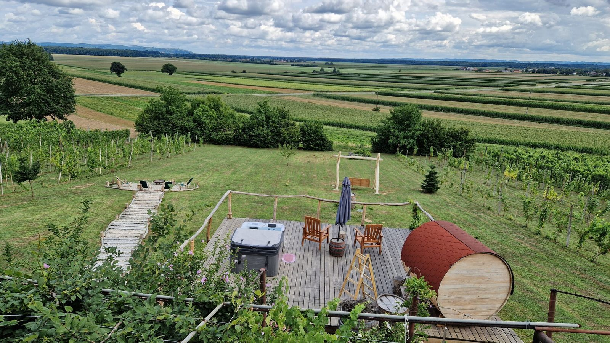
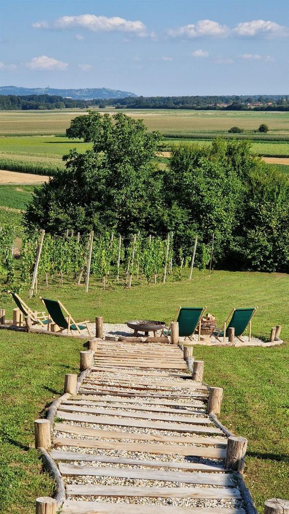
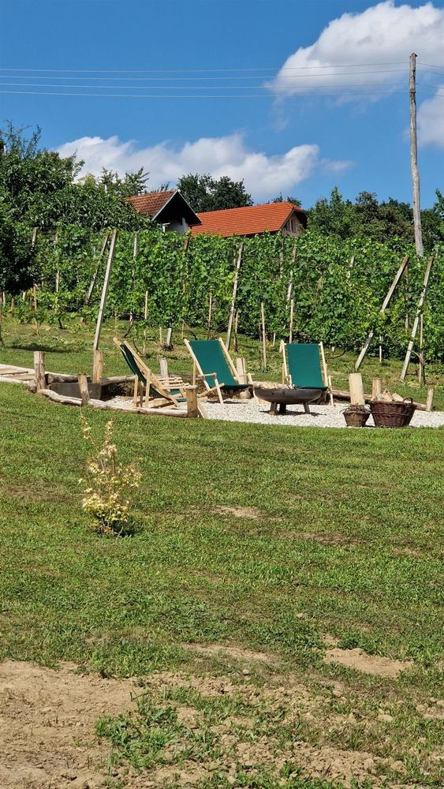
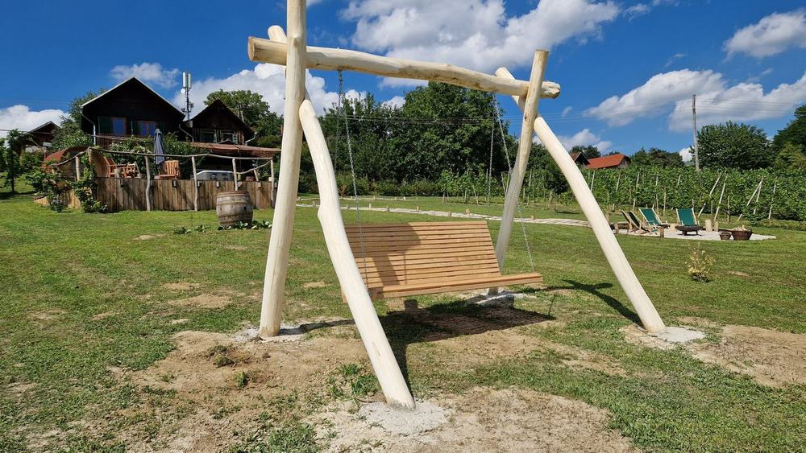

Okolica
Dobrovnik in Prekmurje
Dvojezično območje na severovzhodu Slovenije, blizu madžarske in hrvaške meje.
Kje smo
Dobrovnik – Dobronak
Dobrovnik – Dobronak, naselje, kjer se nahaja počitniška hiška Clavis, je dvojezično območje na severovzhodu Slovenije. Je eno največjih naselij, kjer živi madžarska narodna skupnost.
Madžarska meja je oddaljena 5 km, Hrvaška 17 km, Avstrija 30 km. Obmejni predel Prekmurja je zelo barvit, kar se odraža v kulinariki, kulturi, znamenitostih in običajih ljudi. Območje je zanimivo še glede svoje zgodovine, narave in biodiverzitete, kakor tudi športa, umetnosti in lepote.
V podjetju Rajska vrata d.o.o. smo prepričani, da v Prekmurju, Prlekiji in sosednjih deželah vedno lahko najdete ponudbo, ki zadosti še tako posebni želji gosta.


Vino in dobrote
Med vinogradi
Hiška Clavis se nahaja med vinogradi in tradicionalno se na tem območju ukvarjamo z vinarstvom. V podjetju smo vzpostavili stike z lokalnimi vinarji in ponudniki lokalnih dobrot, tako da si bodo gostje lahko privoščili popolno razvajanje.
V hiški je na voljo vinska klet, ponudba pijač in lokalnih dobrot ter košarica dobrodošlice.
Doživetja
Predlogi za preživljanje časa
Ob možnosti počitka želimo gostom ustreči z informacijami, dogovarjanji ali predlogi za preživljanje časa. Ker smo le nekaj kilometrov od Madžarske in Hrvaške, je destinacija odlična za spoznavanje regije.
Na tabličnem računalniku v hiški gostje najdejo povezave do gostiln in restavracij, prodajaln lokalnih dobrot, pomembnih turističnih točk, termalnih kopališč, podjetij ter zgodovinskih in kulturnih znamenitosti.
Destinacije, vredne ogleda
- Gostilna pri Lujzi Dobrovnik
- Zavod za okolje in turizem Dobrovnik
- Ocean Orchids Dobrovnik
- Vinarium Lendava
- Pomurje
Povezave vodijo na zunanje strani, ki jih navaja tudi obstoječa stran Rajska vrata.

Praktično
Nujna pomoč
Nujna pomoč: 112 (gasilci in reševalci), policija 113. Dežurni zdravnik je v Lendavi (15 km), bolnišnica pa v Rakičanu (20 km).